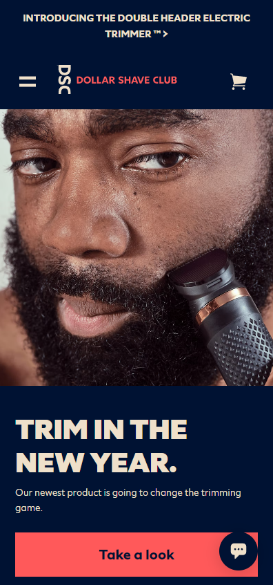
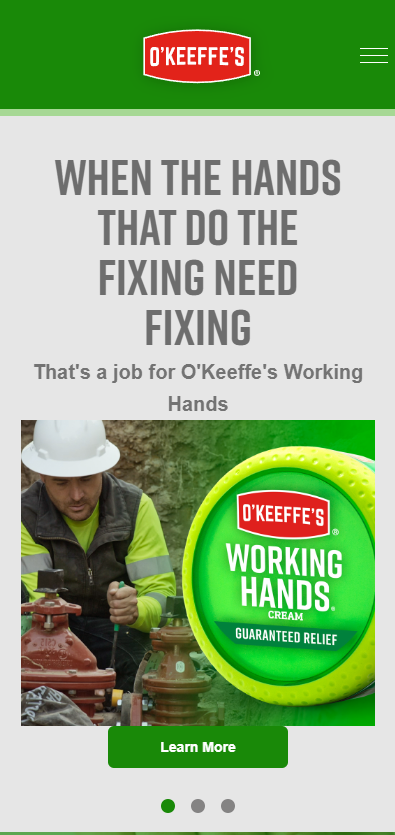
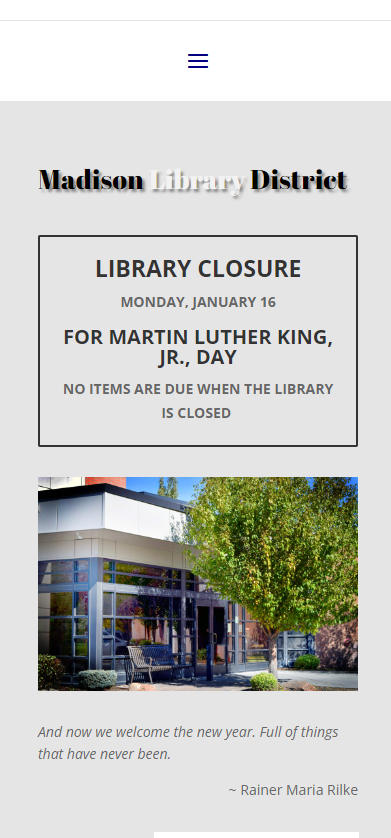

Proximity
Dollar Shave Club
https://www.dollarshaveclub.com/lp/welcome Dollar Shave Club does a good job of showing Proximity. The action buttons are grouped with the text that corresponds to them. This makes it easy to follow the story of the website.
Viual Hierarchy
O'Keefe's
https://okeeffescompany.com/ Tthe text that they want you to see first is larger than the rest. Your eyes naturally follow the flow of text. The text is enough to know what they are trying to say, but not overbearing.
White Space and Clean Design
Madison District Library
https://www.madisonlib.org/ Madison Library District has some comfy spacing when looking at the mobile site. Every picture tab is nicely spaced apart. In between sections there's a little more space to denote that it's separate from the previous section.